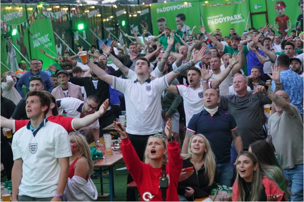
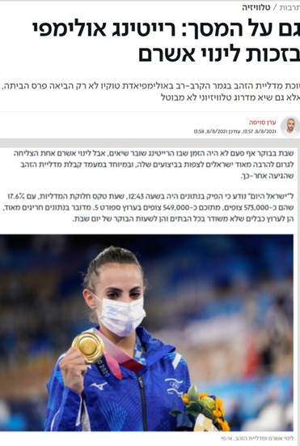

מתלבשים במדי הנבחרת או בצבעים המתאימים. נפגשים וצופים יחד עם אוהדים נוספים. מעודדים תוך כדי צפייה. **"לוקחים חלק באירוע"** באמצעות התקשורת.

**ישראלים רבים רצו להיות חלק מהאירוע המיוחד על ידי צפייה בשידור החי.**

design_services עיצוב האירוע
camera_outdoor הקהל מרגיש חלק מהאירוע
האירוע אמנם מתרחש במקום אחר, לעיתים מרוחק, אבל בגלל **הצפייה בשידור החי, הצפייה המשותפת** ביחד עם אחרים והאווירה המיוחדת והחריגה, הקהל מרגיש חלק מהאירוע.
אירועים גדולים יותר ויותר **מעוצבים כך שיתאימו לשידורים חיים** (בטלוויזיה, באינטרנט) – כך יגיעו למאות מיליונים – ולא רק לאנשים שנמצאים במקום האירוע בזמן ההתרחשות.
אירועי ספורט גדולים, שעיקר הרווח מגיע מזכויות שידור, יעצבו את האירועים כך שיתאימו לצילום, לצפייה למאות המיליונים שיצפו מרחוק ולא רק לעשרות האלפים שיוכלו להיות **באיצטדיון**.
כך עוזרים לקהל רב יותר לקחת חלק באירוע.
quiz שאלות סיכום
quiz שאלות לתרגול
הסבירו את **"אירוע מדיה"** ואת המאפיינים המרכזיים של הצפייה בו.
הסבירו כיצד האירוע עצמו **"מעוצב"** כך שיתאים לצפייה של מיליוני אנשים מרחוק.